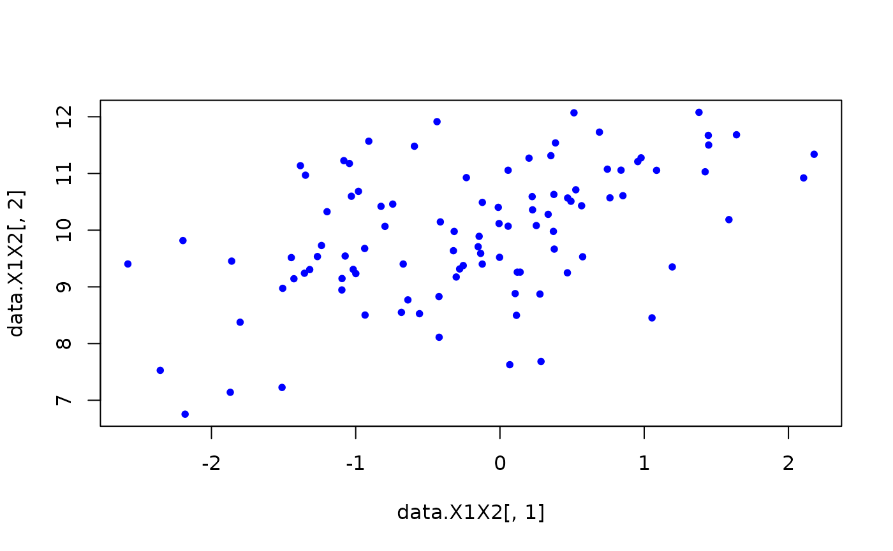

To demonstrate the R package algebraic.dist, we consider the relatively simple case of an observed sample of, we assume, i.i.d. random variables \(X_1,\ldots,X_n\) with multivariate normal distribution.
library(algebraic.dist)
#>
#> Attaching package: 'algebraic.dist'
#> The following object is masked from 'package:grDevices':
#>
#> pdfWe define the parameters of the MVN with:
sigma <- matrix(
c(1, 0.5, 0.5,
0.5, 1, 0.5,
0.5, 0.5, 1), nrow = 3)
M <- mvn(mu = c(0,1,2), sigma = sigma)We observe a sample of size 100 with:
my_sampler <- algebraic.dist::sampler(M)
#print(my_sampler)
n <- 100
data <- my_sampler(n)
#data <- mvtnorm::rmvnorm(n, c(1,2,3))
head(data, n = 8)
#> [,1] [,2] [,3]
#> [1,] 1.9349713 1.4220062 3.482455
#> [2,] 0.4736419 0.7470738 2.302752
#> [3,] -0.6890827 0.1309462 1.481238
#> [4,] 1.8899572 4.2003196 4.447844
#> [5,] -0.4094674 1.1943371 1.965876
#> [6,] 0.7392793 1.7804766 3.877121
#> [7,] 0.5301368 2.2459945 1.879430
#> [8,] 0.2239188 2.4003764 1.866621
support <- sup(M)
infimum(support)
#> [1] -Inf -Inf -Inf
supremum(support)
#> [1] Inf Inf Inf
dim(support)
#> [1] 3
X1X2 <- marginal(M, c(1,2))
rv <- sampler(X1X2)
# sample some data; could just use data directly
data.X1X2 <- rv(1000)
# scatter plot a 2d sample
plot(data.X1X2[,1], data.X1X2[,2], pch = 20, col = "blue")